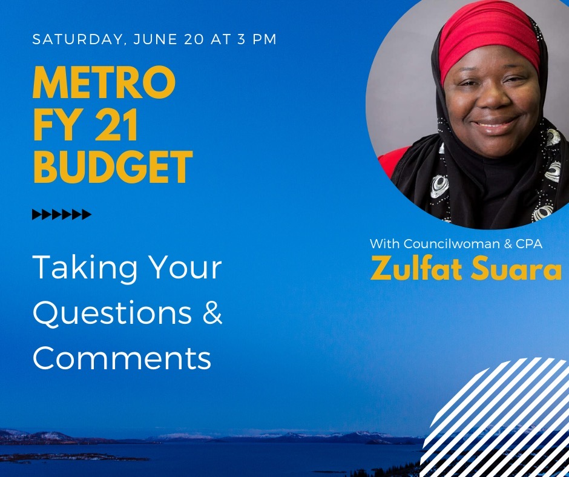

Metro FY21 Budget- My Take on the Property Tax Increase
Yesterday, Metro Council voted to increase property taxes by $1.06. I have received emails from some constituents who are upset about the raise. I understand the frustration. Nashvillians have been through a lot this year: from the tornado, to COVID-19, to the loss of jobs, businesses and income, these past few months have tested this community. Therefore, the question that a lot of you must be wondering, if this year has been marked by such difficulty and disruption, why would the Council vote for an increase in property taxes at this time?
As a council member who voted yes, I want you to understand my reasoning. A property tax increase is something many of us, including myself, did not want to impose, but unfortunately there was no way out of our current situation. Since the Mayor’s budget was announced, I have endlessly been looking into ways to reduce the proposed property tax increase. There were options to reduce department services (parks, hospitals, community programs, etc.) However, in my opinion, any cut that slashes educational programs is not the right decision. Many council members, including myself, were working furiously in the background, looking into other options to help mitigate this property tax increase.
Below I have included common questions asked by me and some of my colleagues as a means of finding additional options:
- Can we reduce salaries for high income earners (those making $75K and above)?
No, because Metro’s charter does not allow cuts to only a specific socioeconomic class.
- Can Metro Council Members forego their salaries?
No – councilmembers are employees and by Metro’s charter, cuts cannot affect just one class of workers.
- Layoffs and Furloughs?
The Council does not have the authority to layoff or furlough employees; however, I personally believe that layoffs are not the answer. Anytime this happens in corporate America, it always disproportionately affects minority populations, and I do not feel right about causing my constituents to lose their jobs.
- Can we use the fund balance (i.e. “savings”/reserve account for Metro)?
The answer is no. We do not have enough fund balance and the State Comptroller wrote us several months back mandating that we must have a 5% balance in our reserve by the end of the year.
- What about the Municipal Liquidity Facility (i.e. loan funding for city/state governments)?
I am not a fan of an increase in loans. I am willing to do so in order to spare the citizens but again, this is not an option. The federal government loan is a last resort and the combined payment after 3 years would have cost us an additional $5M.
- What about other revenues?
- Impact fee (i.e. fee charged to building developers) – This fee is not allowed by the state.
- Sales tax- This would involve giving a 75 days notice to the election commission, which while is doable, also requires a vote by the people. Thus, while it might be a potential option, it is not a guarantee at this time to be a source of revenue.
- Beer tax, toll tax etc- Metro cannot assess these as they are determined by the state.
Aren’t there Other Substitutes and Amendments?
It is a misconception that there is a solution that does not increase taxes. I choose not to support any of the other substitutes in addition to increasing taxes as they contain provisions that are not feasible. CM O’Connell’s substitute includes a 63 cents tax increase and the rest relied on the Municipal Facility Liquidity. As indicated above, we do not qualify for the loan and relying on it may create more issues in the future.
CM Glover’s substitute has a 68 cents tax increase and would be accompanied by increase in the wheel tax (motor vehicle tax). There were issues with the wheel tax. The first problem was that it was not proposed in time. We needed two meetings to approve a tax increase which we did not have. If we chose to make it a fee, a study would be required, which we do not have. The other problem is that the wheel tax is not not equitable. If your household has more than one car, your bill may be especially higher.
While CM O’Connell, Johnston and Henderson put forth amendments that would reduce the property tax rate, I ultimately chose not to support any of them because part of their proposals required taking funds from education, which is already struggling here in Nashville. This cut in education was disproportionate to the benefits of reducing the property tax rate. For example, one of the amendments would result in a 3 cents reduction in property taxes. For someone with a $2 million dollar home, this would result in a $150 savings. If the home is $200K, the savings would only be $15. All of this would be possible through a $500K cut from the Summer Youth Employment Program. Thus, I did not think it was worth the impact this would have on education. Other amendments included a proposal to cut Nashville GRAD. I honestly do not believe we want to save money at the expense of our youth. I am positive that if people realize the dollar value, most residents will gladly give up the $15 for the education of our youth.
The Mayor’s Budget versus Mendes Substitute?
At this point, a major tax increase is inevitable. The choice is now between the mayor and CM Mendes. Based on emails received, many do not want a tax increase but the majority also believe that if there must be one, it should be used for the benefit of the community. CM Mendes’ substitute did just that. For a few cents more, the Mendes substitute includes the restoration of Nashville Education Commission, an increase in funding for Nashville GRAD, additional funding to MNPS and an increase in hourly wage to $15/hr for MNPS support staff. Below is a side by side comparison of all the options.
Other Budget Issues: defund the police
Following the death of George Floyd, many attended the council meeting and wrote emails asking the council to defund the police. The real question is: Why do we have a high crime rate and what can we do about it? I strongly believe that investing in social emotional learning, mental health, education, etc. will ultimately reduce crime and the need for so many police. Rather than focus heavily on punitive measures which disproportionately impact Black people, we need to look into preventive measures. To me, as a councilperson, that starts with the budget. I commend CM Welsh, Parker and O’Connell for sponsoring amendments proposing a divestment of funds from the police and an investment of funds in education, mental health and social services.
I supported the amendment by CM Parker that would cut $2M from the police, sheriff and DA and invest in social and emotional learning.
Unfortunately, all of the bills failed. It was sad to see that despite all the Black Lives Matter awareness and conversation, some of my colleagues were ready to cut educational programs by up to 100% but were not willing to reduce the police by 1%. Diverting that $2M out of law enforcement to invest in social emotional learning for our children is better for all of us. Doing that would also let our citizens know that we are listening. We must not just talk about ending racism, we must act to end racism and police brutality. Unfortunately, the bills may have failed, but the conversations about the role of police in our community must continue. Hopefully, we will be able to come to a consensus and take action soon.
What’s Happens Next?
We had to make a tough decision. Metro was in a hole so deep, and the limitations imposed by the state and the comptroller did not give us much flexibility to be creative in finding a way out of the hole. I wish those before us made tougher decisions and did not push the problems under a rug. Many approved loans that we are paying for now. Many did not support a slight increase that would have given us a buffer.
I take solace in the fact that this is not over. Thanks to CM Mendes, the budget that we passed has a provision that allows us to revisit this conversation in August: We will be looking at actual revenues in August and will lower the tax rate if revenues come in higher. I pray that our estimates are wrong and that if we get more money than anticipated, we can reduce the rates before the tax bill goes out. I also want to remind everyone we still have the $121M in CARES Act fund which we plan to use to assist individuals and small businesses.
I will be hosting the final FY21 Budget conversations on Facebook this Saturday at 3pm. Feel free to join with your comments and your questions. To join go to https://www.facebook.com/ZulfatSuaraforCouncil/
As always, I welcome your questions, comments and suggestions.
